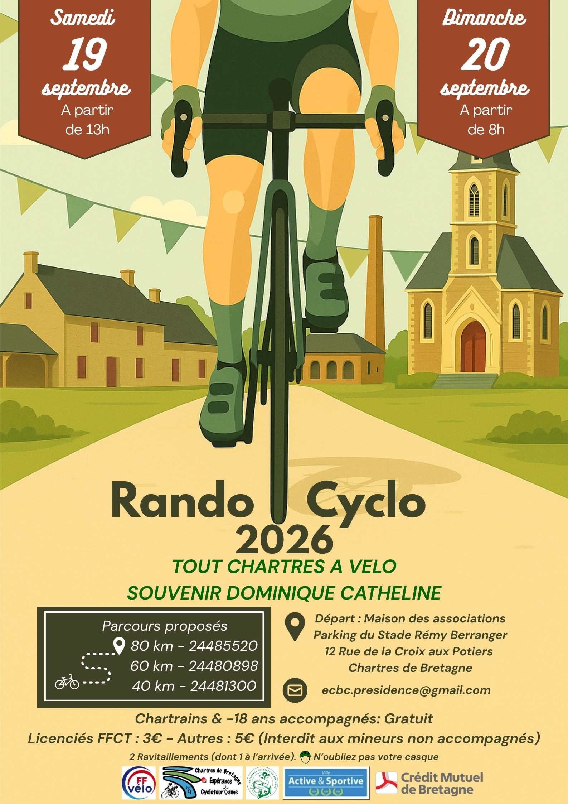

Tout Chartres à Vélo
🚴 La Bicyclette Bruzoise participe à la randonnée "Tout Chartres à Vélo" !
Samedi 19 septembre 2026, les adhérentes et adhérents de La Bicyclette Bruzoise sont invités à participer à cette randonnée.
Rendez-vous à partir de 13h30 place du Docteur Joly à Bruz pour un départ groupé à 13h45.
Rapprochez-vous de vos capitaines de route pour plus d'informations
sur l'organisation et les horaires de départ.
L'Espérance Chartres de Bretagne Cyclotourisme organise son rendez-vous annuel « Tout Chartres à Vélo – Souvenir Dominique Catheline », au départ de la Maison des Associations de Chartres-de-Bretagne.
Deux journées pour profiter des routes du secteur dans un esprit cyclotouriste et convivial, avec plusieurs parcours adaptés aux différents niveaux de pratique.
🚴 Les parcours
Les traces annoncées par l'organisateur proposent trois distances :
- environ 40 km — OpenRunner n° 24481300
- environ 60 km — OpenRunner n° 24480898
- environ 80 km — OpenRunner n° 24485520
📍 Informations pratiques
Lieu : Maison des Associations
Adresse : 16 rue de la Croix aux Potiers, 35131 Chartres-de-Bretagne
Tarifs indiqués par FFVélo : 3 € pour les adultes licenciés, 6 € pour les adultes non licenciés et gratuit pour les moins de 18 ans.
